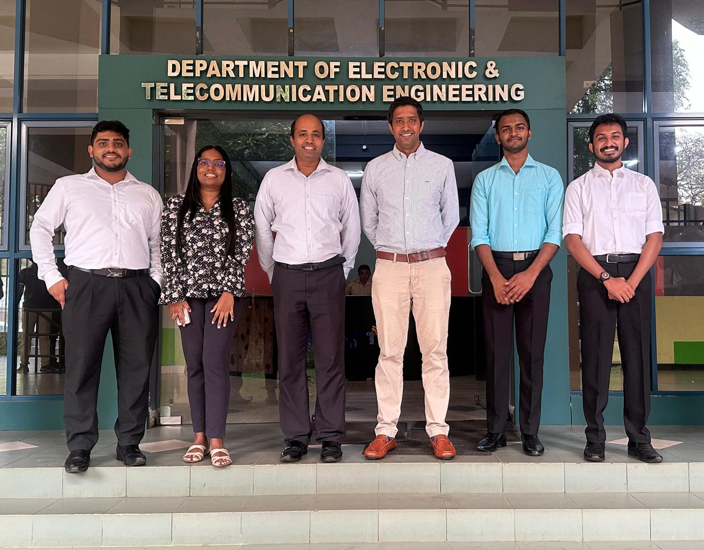
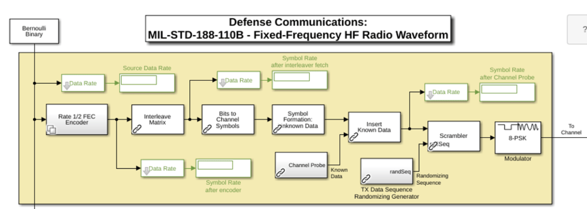
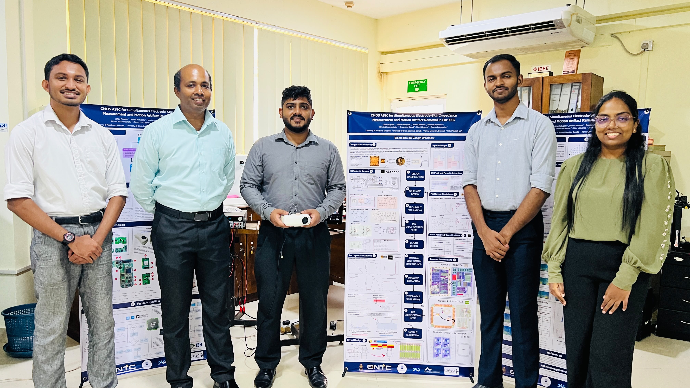
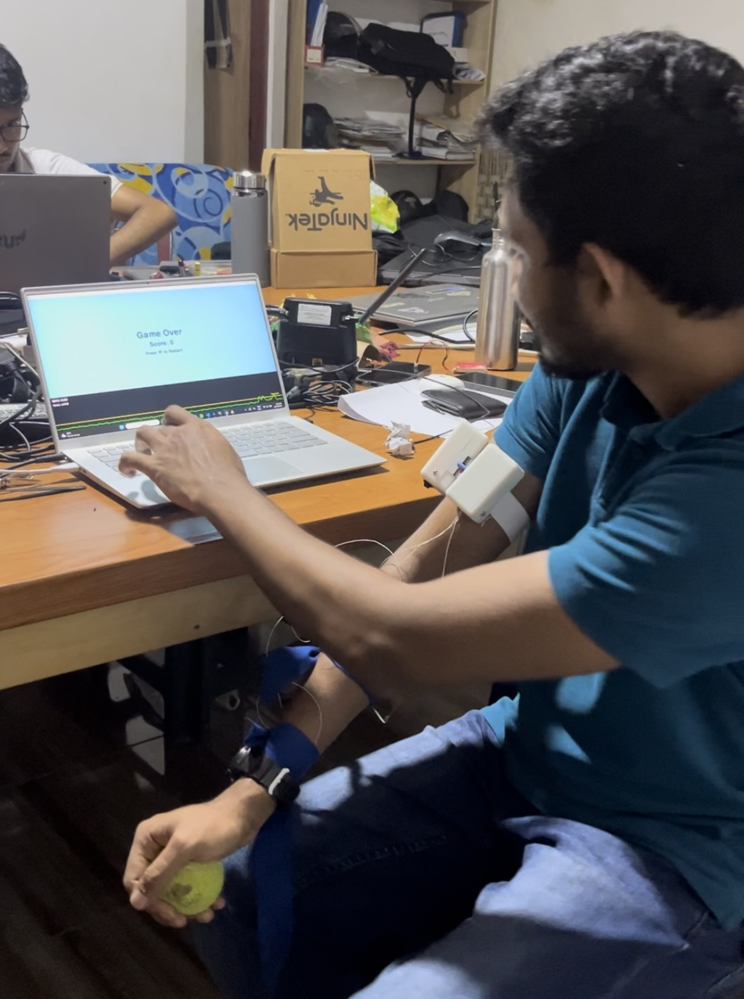
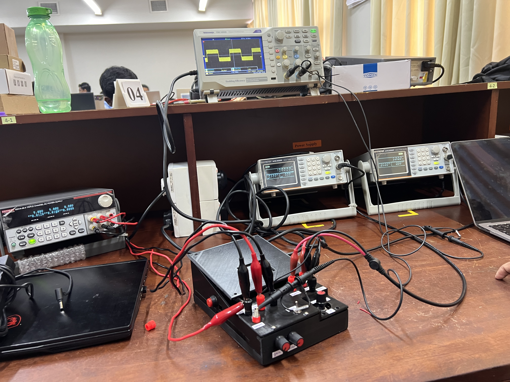

SELECTED WORK · 2023—2026
Research &
projects.
A collection of circuit designs, biomedical systems, digital hardware, and assistive technology. Select a project to read its overview.
ACROSS 7 AREAS
Mixed-Signal IC Design
01 PROJECTAnalog IC Design
03 PROJECTSFully differential multiplier
A CMOS multiplying quad for I/Q demodulation in electrode-skin impedance extraction.
View project ↗ 03ANALOG IC · 2025Fully differential operational amplifier
A fully differential op-amp designed for low-frequency EEG acquisition filter applications.
View project ↗
04BIOMEDICAL IC · 2026Electrode-skin impedance measurement IC
A low-power analog IC for continuous impedance mismatch monitoring using a driven-right-leg stimulus.
View project ↗Digital IC Design
01 PROJECTRF IC Design
01 PROJECTDigital System Design
03 PROJECTS
07FPGA & DSP · 2026High-frequency modem systems
FPGA-based modem modules for digital modulation, demodulation, and signal processing.
View project ↗ 08FPGA · 2024UART transceiver
A Verilog UART transceiver verified in simulation and on a DE0-Nano FPGA board.
View project ↗ 09DIGITAL SYSTEMS · 202432-bit floating-point unit
An FPGA-implemented arithmetic unit for addition, subtraction, multiplication, and division.
View project ↗Electronic Product Design
04 PROJECTS
10BIOSIGNAL SYSTEMS · 2026Wearable Ear-EEG system
Dry-contact EEG acquisition with electrode–skin impedance monitoring and motion artifact cancellation.
View project ↗ 11ASSISTIVE TECHNOLOGY · 2025Assistive robotic gripper & pickup stick
An assistive device designed for people with muscle-wasting disorders.
View project ↗
12BIOSIGNAL PROCESSING · 2025EMG gesture-control interface
Signal acquisition and processing for real-time gesture control of a custom game.
View project ↗
13ANALOG ELECTRONICS · 2023Analog computer
Op-amp circuits for arithmetic and four-quadrant multiplication, with PCB and enclosure design.
View project ↗Biosignal Processing and Machine Learning
01 PROJECT